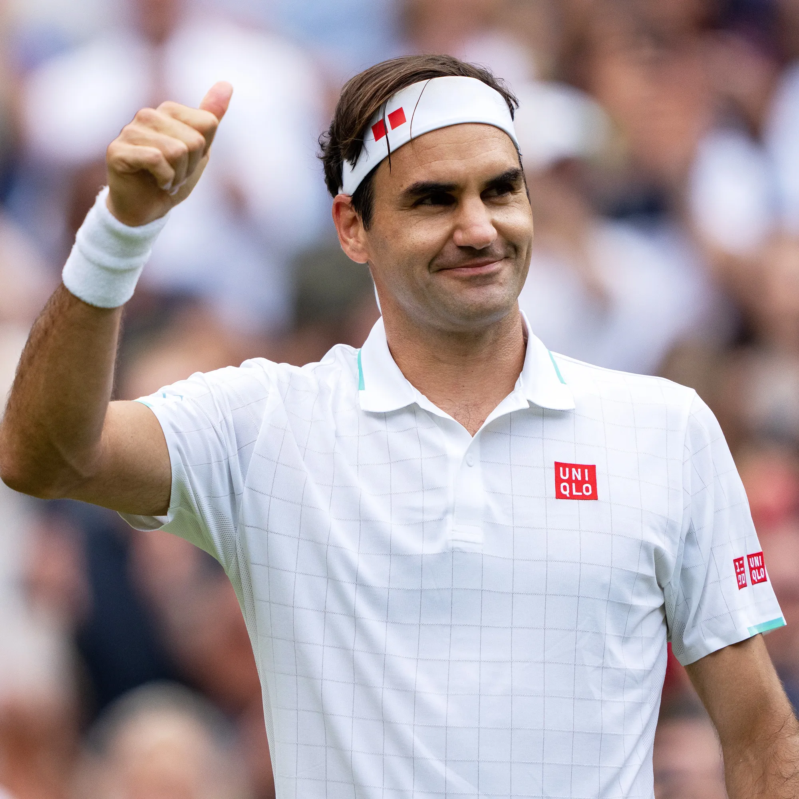

Roger Federer ist ein professioneller Tennisspieler aus der Schweiz, der als einer der größten Tennisspieler aller Zeiten gilt.
Er hat zahlreiche Rekorde gebrochen und unzählige Titel gewonnen, darunter 20 Grand-Slam-Titel.
Federer ist bekannt für sein elegantes Spiel, seine Vielseitigkeit und seine Fähigkeit, auf verschiedenen Belägen zu dominieren.
Er ist auch für sein Engagement abseits des Platzes bekannt, darunter seine Wohltätigkeitsarbeit und sein Einsatz für die Förderung des Sports.
